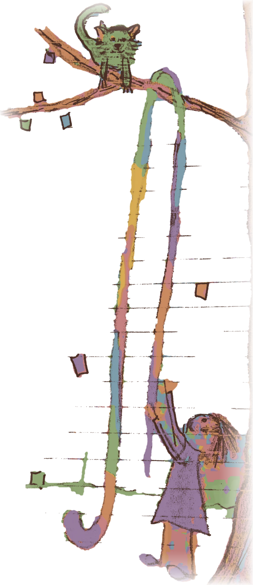

How Wonderland began
Draft, to be replaced by Nana's own words.

Wonderland began at bedtime. One of Nana's granddaughters wanted a story, and then another one, and then one more, and Nana made them up as she went: a mouse who lived in a teacup, cats who would eat only salmon, a castle that sends colored charms drifting across the sky.
While she told them, Nana drew. The pictures went into a small lined notebook, in pencil and colored pencil, with notes in the margins: "hold dragon by tail, toss salmon cubes," "Stormy is my new thinking cap, or cat hat."
The stories were never written down. The notebook kept the pictures, and the pictures kept the characters, waiting. This website is a place to bring the stories back, one by one, in Nana's own words.
The drawings here are Nana's, cleaned up and colored to look like the pages of her notebook.